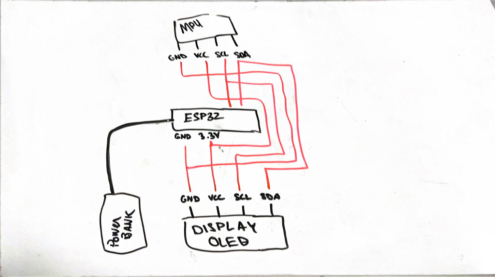

<h6>Kindly click <a href="proccess.html" target="_blank" style="color: #0645AD">here </a>for full process</h6>
<br>
<h5>Ladies and Gentlemen, I present to you what 7 weeks of digital fabrication has taught me</h5>
<br><h3><b>Video</b></h3>
<iframe width="560" height="315" src="https://www.youtube.com/embed/fnnH6hY3uAQ" title="YouTube video player" frameborder="0" allow="accelerometer; autoplay; clipboard-write; encrypted-media; gyroscope; picture-in-picture" allowfullscreen></iframe>
<br><br><h3><b>How</b></h3>
<h6>When the sensor detect a distance that is less than the allotted threashold, it signals the obstacle avoidance software to find a heuristic based approach for which path the car should take to avoid the obstacle.</h6>
<br><h3><b>Why</b></h3>
<h6>1.25 Million deaths occur worldwide every year due to road related accidents. According to the National Highway Traffic Safety Administration, there are 17,000 car accidents in the U.S alone every day. Some new cars contain some systems like Forward Collision Warning or Automatic Emergency Braking. However, since it is not a federal requirement for cars to ship with previously said systems, without mentioning some of the older cars on the road, a lot of newly manufactured cars don't. It was quickly obvious to me that my project would involve finding a solution to such an underrated yet very important issue. When looking around the lab for possible final project ideas, I stumbled upon ultrasound sensors. HC-SR04 sensors use ultrasound to measure distance. Great thing about these? They're around 75¢ each! The whole completed project's obstacle avoidance system (with a better board) would cost about $50. The message is clear; If a 16-year-old can do it, a $2.7 Trillion industry with a limitless amount of brilliant engineers can do it on a bigger scale and at least help reduce the 1.25 Million tragic deaths that happen every year.</h6>
<br><h3><b>Circuits</b></h3>
<h5>Sender Board</h5>

<br><h5>Reciever Board</h5>
<img src="../images/FinalProject/FinalProject.jpg" width="400" alt="">
<br><h3><b>Code</b></h3>
<h5>Sender Board</h5>
<pre><code class="arduino">
// Obstacle avoidance system is taken out
#include <esp_now.h>
#include <WiFi.h>
#include <Adafruit_MPU6050.h>
#include <Adafruit_Sensor.h>
#include <Adafruit_SSD1306.h>
#include <Wire.h>
Adafruit_MPU6050 mpu;
Adafruit_SSD1306 display = Adafruit_SSD1306(128, 64, &Wire);
// REPLACE WITH YOUR RECEIVER MAC Address
uint8_t broadcastAddress[] = {0x0C, 0xB8, 0x15, 0xB9, 0x86, 0xB8};
// Structure example to send data
// Must match the receiver structure
typedef struct struct_message {
float x;
float y;
} struct_message;
// Create a struct_message called myData
struct_message myData;
esp_now_peer_info_t peerInfo;
// callback when data is sent
void OnDataSent(const uint8_t *mac_addr, esp_now_send_status_t status) {
Serial.print("\r\nLast Packet Send Status:\t");
Serial.println(status == ESP_NOW_SEND_SUCCESS ? "Delivery Success" : "Delivery Fail");
}
void setup() {
// Init Serial Monitor
Serial.begin(115200);
Serial.println("MPU6050 OLED demo");
if (!mpu.begin()) {
Serial.println("Sensor init failed");
while (1)
yield();
}
// Set device as a Wi-Fi Station
WiFi.mode(WIFI_STA);
// Init ESP-NOW
if (esp_now_init() != ESP_OK) {
Serial.println("Error initializing ESP-NOW");
return;
}
// Once ESPNow is successfully Init, we will register for Send CB to
// get the status of Trasnmitted packet
esp_now_register_send_cb(OnDataSent);
// Register peer
memcpy(peerInfo.peer_addr, broadcastAddress, 6);
peerInfo.channel = 0;
peerInfo.encrypt = false;
// Add peer
if (esp_now_add_peer(&peerInfo) != ESP_OK){
Serial.println("Failed to add peer");
return;
}
if (!display.begin(SSD1306_SWITCHCAPVCC, 0x3C)) { // Address 0x3C for 128x64
Serial.println(F("SSD1306 allocation failed"));
for (;;)
; // Don't proceed, loop forever
}
display.display();
delay(500); // Pause for 2 seconds
display.setTextSize(2);
display.setTextColor(WHITE);
display.setRotation(0);
mpu.setAccelerometerRange(MPU6050_RANGE_16_G);
mpu.setGyroRange(MPU6050_RANGE_250_DEG);
mpu.setFilterBandwidth(MPU6050_BAND_21_HZ);
Serial.println("");
delay(100);
}
void loop() {
// Set values to send
sensors_event_t a, g, temp;
mpu.getEvent(&a, &g, &temp);
myData.x = a.acceleration.x;
myData.y = a.acceleration.y;
display.clearDisplay();
display.setCursor(0, 0);
if (a.acceleration.x >= 4) {
display.println("Back");
} else if (a.acceleration.x <= -4) {
display.println("Forward");
} else if (a.acceleration.y <= -4) {
display.println("Left");
} else if (a.acceleration.y >= 4) {
display.println("Right");
} else {
display.println("Stopped");
}
display.display();
delay(100);
// Send message via ESP-NOW
esp_err_t result = esp_now_send(broadcastAddress, (uint8_t *) &myData, sizeof(myData));
if (result == ESP_OK) {
Serial.println("Sent with success");
}
else {
Serial.println("Error sending the data");
}
delay(100);
}
</code></pre>
<br>
<h5>Reciever Board</h5>
<pre><code class="arduino">
#include <esp_now.h>
#include <WiFi.h>
// Defines pin numbers for all different sensors and motors
const int backTrig = 13;
const int frontTrig = 14;
const int leftTrig = 25;
const int rightTrig = 32;
const int backEcho = 12;
const int frontEcho = 27;
const int leftEcho = 33;
const int rightEcho = 35;
const int A1A = 5;
const int A1B = 17;
const int B1A = 18;
const int B1B = 19;
// Structure example to receive data
// Must match the sender structure
typedef struct struct_message {
float x;
float y;
} struct_message;
// Create a struct_message called myData
struct_message myData;
// callback function that will be executed when data is received
void OnDataRecv(const uint8_t * mac, const uint8_t *incomingData, int len) {
memcpy(&myData, incomingData, sizeof(myData));
Serial.print("Bytes received: ");
Serial.println(len);
Serial.print("Float: ");
Serial.println(myData.x);
}
void setup() {
// Initialize Serial Monitor
Serial.begin(115200);
pinMode(A1A, OUTPUT);
pinMode(A1B, OUTPUT);
pinMode(B1A, OUTPUT);
pinMode(B1B, OUTPUT);
digitalWrite(A1A, 0x0);
digitalWrite(A1B, 0x0);
digitalWrite(B1A, 0x0);
digitalWrite(B1B, 0x0);
// Set device as a Wi-Fi Station
WiFi.mode(WIFI_STA);
// Init ESP-NOW
if (esp_now_init() != ESP_OK) {
Serial.println("Error initializing ESP-NOW");
return;
}
// Once ESPNow is successfully Init, we will register for recv CB to
// get recv packer info
esp_now_register_recv_cb(OnDataRecv);
}
void loop() { // myData.x = accelerometer's x postition recieved from sender ESP32 || myData.y = accelerometer's y postition recieved from sender ESP32
bool was_back = false;
if (myData.x >= 4) {
was_back = true;
while (myData.x >= 4) {
backwards();
}
} else if (myData.x <= -4) {
was_back = false;
while (myData.x <= -4) {
forward();
}
} else if (myData.y <= -4 && was_back == true) {
while (myData.y <= -4 && was_back) {
digitalWrite(A1A, 0x0);
digitalWrite(A1B, 0x1);
digitalWrite(B1A, 0x0);
digitalWrite(B1B, 0x0);
}
} else if (myData.y <= -4 && was_back == false) {
while (myData.y <= -4 && !(was_back)) {
right();
}
} else if (myData.y >= 4 && was_back == true) {
digitalWrite(A1A, 0x0);
digitalWrite(A1B, 0x0);
digitalWrite(B1A, 0x0);
digitalWrite(B1B, 0x1);
}
} else if (myData.y >= 4 && was_back == false) {
while (myData.y >= 4 && !(was_back)) {
left();
}
} else {
stopped();
}
}
float frontSensor() { // Gets readigs from front ultrasonic sensor to obtain a front distance
long duration2, distance2;
digitalWrite(frontTrig, 0x0);
delayMicroseconds(2);
digitalWrite(frontTrig, 0x1);
delayMicroseconds(10);
digitalWrite(frontTrig, 0x0);
duration2 = pulseIn(leftEcho, 0x1);
distance2= (duration2/2) / 29.1;
return distance2;
}
float rightSideSensor() { // Gets readigs from right ultrasonic sensor to obtain a right distance
long duration1, distance1;
digitalWrite(rightTrig, 0x0);
delayMicroseconds(2);
digitalWrite(rightTrig, 0x1);
delayMicroseconds(10);
digitalWrite(rightTrig, 0x0);
duration1 = pulseIn(rightEcho, 0x1);
distance1 = (duration1/2) / 29.1;
return distance1;
}
float leftSideSensor() { // Gets readigs from left ultrasonic sensor to obtain a left distance
long duration4, distance4;
digitalWrite(leftTrig, 0x0);
delayMicroseconds(2);
digitalWrite(leftTrig, 0x1);
delayMicroseconds(10);
digitalWrite(leftTrig, 0x0);
duration4 = pulseIn(leftEcho, 0x1);
distance4= (duration4/2) / 29.1;
return distance4;
}
float backSensor() { // Gets readigs from back ultrasonic sensor to obtain a back distance
long duration3, distance3;
digitalWrite(backTrig, 0x0);
delayMicroseconds(2);
digitalWrite(backTrig, 0x1);
delayMicroseconds(10);
digitalWrite(backTrig, 0x0);
duration3 = pulseIn(backEcho, 0x1);
distance3= (duration3/2) / 29.1;
return distance3;
}
void forward() { // Moves vehicle forward
digitalWrite(A1A, 0x1);
digitalWrite(A1B, 0x0);
digitalWrite(B1A, 0x1);
digitalWrite(B1B, 0x0);
}
void backwards() { // Moves car backwards
digitalWrite(A1B, 0x1);
digitalWrite(A1A, 0x0);
digitalWrite(B1B, 0x1);
digitalWrite(B1A, 0x0);
}
void stopped() { // Stops the vehicle
digitalWrite(A1A, 0x0);
digitalWrite(B1A, 0x0);
digitalWrite(B1B, 0x0);
digitalWrite(A1B, 0x0);
}
void right() { // Turns LEFT motor to full speed whilst turing off the right motor in order to turn right (forward spin)
digitalWrite(A1A, 0x1);
digitalWrite(A1B, 0x0);
digitalWrite(B1A, 0x0);
digitalWrite(B1B, 0x0);
}
void left() { // Turns RIGHT motor to full speed whilst turing off the left motor in order to turn left (forward spin)
digitalWrite(A1A, 0x0);
digitalWrite(A1B, 0x0);
digitalWrite(B1A, 0x1);
digitalWrite(B1B, 0x0);
}
</code></pre>
<br><br><h3><b>Resources</b></h3>
<p><a href="https://docs.espressif.com/projects/esp-idf/en/latest/esp32/api-reference/network/esp_now.html" target="_blank">- ESP-NOW - ESP32 - — ESP-IDF Programming Guide latest documentation</a></p>
<p><a href="https://randomnerdtutorials.com/esp-now-esp32-arduino-ide/" target="_blank">- Getting Started with ESP-NOW (ESP32 with Arduino IDE) | Random Nerd Tutorials</a></p>
<p><a href="https://randomnerdtutorials.com/esp-now-two-way-communication-esp32/" target="_blank">- ESP-NOW Two-Way Communication Between ESP32 Boards | Random Nerd Tutorials</a></p>
<p><a href="https://esp32io.com/tutorials/communication-between-two-esp32" target="_blank">- Communication between two ESP32 </a></p>
<p><a href="https://randomnerdtutorials.com/esp32-mpu-6050-accelerometer-gyroscope-arduino/" target="_blank">- ESP32 MPU-6050 Accelerometer and Gyroscope (Arduino) | Random Nerd Tutorials</a></p>
<p><a href="https://create.arduino.cc/projecthub/imjeffparedes/add-wifi-to-arduino-uno-663b9e" target="_blank">- Add WiFi to Arduino UNO - Arduino Project Hub</a></p>
<p><a href="https://randomnerdtutorials.com/esp-now-two-way-communication-esp32/" target="_blank">- ESP-NOW Two-Way Communication Between ESP32 Boards | Random Nerd Tutorials</a></p>
<p><a href="https://randomnerdtutorials.com/esp32-hc-sr04-ultrasonic-arduino/#:~:text=The%20HC%2DSR04%20ultrasonic%20sensor%20uses%20sonar%20to%20determine%20the,ultrasonic%20transmitter%20and%20receiver%20modules" target="_blank">- ESP32 with HC-SR04 Ultrasonic Sensor with Arduino IDE | Random Nerd Tutorials.</a></p>
<br><h5><b>Files</b></h5>
<p><a href="https://a360.co/3QfRYAC" target="_blank">- Car Design</a></p>